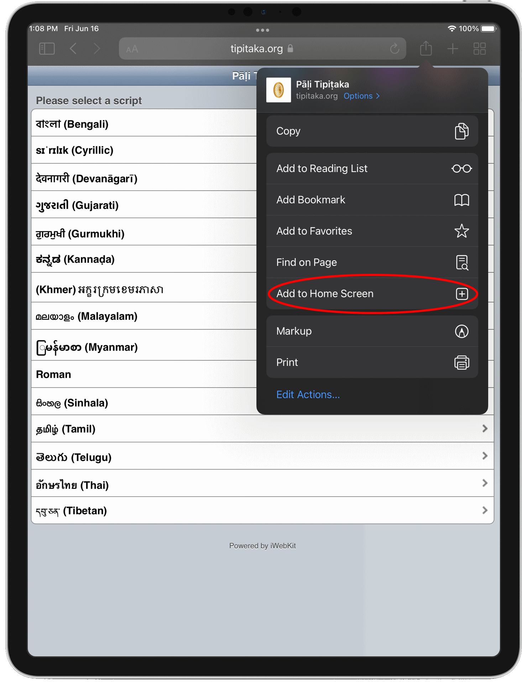

This is a work in progress. The Tipiṭaka (Mūla) is available for all the scripts, and the Aṭṭhakathā is available for the Roman script.
To install the Pāḷi Tipiṭaka web app on your iPhone, iPod Touch, or iPad go to tipitaka.org/ios, and then follow the steps below for iPhone & iPod Touch and iPad.
Click on the "Add to Home Screen" button.

Click on the "Add" button.
The Pāḷi Tipiṭaka icon will now appear on your iPad's home screen.

iPhone & iPod Touch
Click on the icon at the bottom center of the screen as shown below.
Click on the "Add to Home Screen" button.
Click on the "Add" button.
The Pāḷi Tipiṭaka icon will now appear on your iPhone's or iPod Touch's home screen.